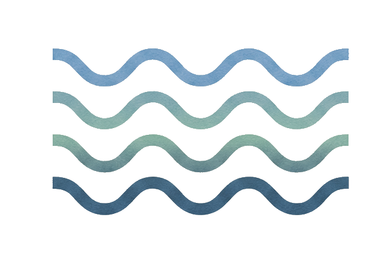

Brackish ProjectsIn many disaster-prone areas, risk can change dramatically at a block-to-block level, based on countless factors that go beyond traditional physical vulnerability metrics. This platform is, at its core, meant to bridge that divide by taking a purposefully qual/quant approach: it embraces the nuance and complexity of a place to show how physical and social hazard must be taken together to be effective, where historical and institutional gaps exist, and how that combination can inform critical decision-making.
It's designed to be dual-use. For humanitarian actors, a deeper and more complete view of the moving parts that create or hide localized vulnerability, so service delivery can be more targeted, effective, and efficient. For communities, governments, and local actors, validation of what they may already know or suspect about their own risk profile, so they can advocate for resource access and improvement on their own behalf.
Every tool in this suite explores vulnerability the same underlying way: by holding these three variables in relation to each other, not by treating any one of them as the whole answer.
How close is a community, geographically or situationally, to the hazard itself? Living in a coastal flood zone or an urban heat island shapes how directly people are in harm's way, sometimes down to which side of a street.
Given that exposure, how much harm does it actually do? Age (young children, elderly residents), pre-existing health conditions, and dependence on climate-sensitive work like farming or fishing all shape how hard the same hazard hits different people standing in the same place.
What can a person, household, or community actually draw on to cope and recover? Wealth, access to healthcare, strong community networks, and functioning institutions all determine whether that exposure and sensitivity turn into lasting harm or a manageable disruption.
Vulnerability isn't any one of these three on its own. It's what happens when you hold all of them together, and that's the core data-processing approach behind every tool in this suite.
Built to be customized per region, crisis, and population, but built with the same approach in mind.
A tract-level vulnerability map with in-depth context on localized factors, plus guided instructions for how to use them in humanitarian decision-making.
An infrastructure failure simulation map. Understanding how systems cascade into each other gives a clear chronology for how communities are affected in the short and long term.
Local efforts that have provided support in affected areas, shown across the full spectrum of success and failure.
Composite, real-story-based lived experience, showing how people actually fared before, during, and after a disaster.
Each tool presents these features in locally contextualized ways, so you can see where risk concentrates and who is least equipped to withstand it.
Each tool is a self-contained experience, built for its region's specific hazards, geography, history, and communities. Choose one below to learn more.